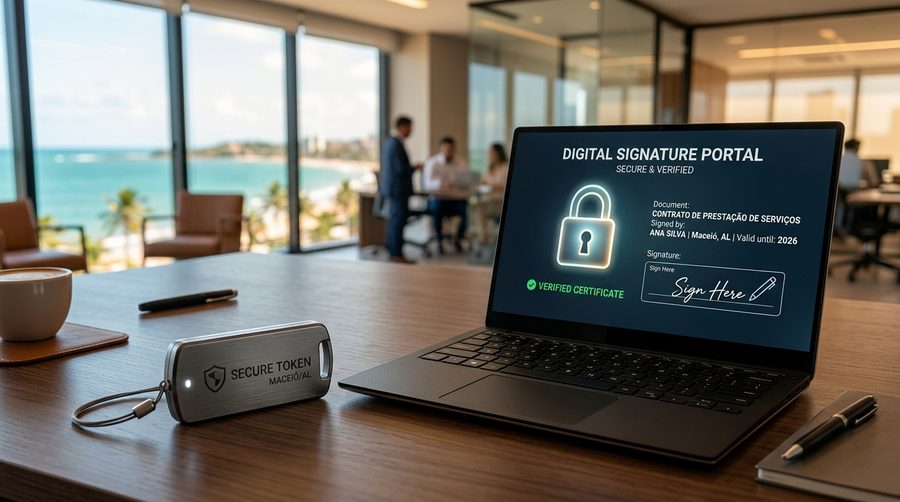

Precisa de e-CNPJ, e-CPF, certificado A1 ou A3?
Entenda as modalidades de certificação digital, suas aplicações e os cuidados necessários para escolher a opção mais adequada para o seu sistema e rotina.

O certificado digital é uma credencial eletrônica que permite identificar pessoas físicas ou jurídicas e realizar operações digitais que exigem autenticação ou assinatura eletrônica qualificada, conforme a aplicação.
No Brasil, os certificados emitidos no âmbito da Infraestrutura de Chaves Públicas Brasileira (ICP-Brasil) são utilizados em diversos procedimentos eletrônicos, oferecendo autenticação, integridade, não repúdio e mecanismos avançados de segurança.
A emissão de certificados ICP-Brasil deve ocorrer por meio de entidades autorizadas e credenciadas oficialmente perante a Receita Federal do Brasil e o Instituto Nacional de Tecnologia da Informação (ITI).
Dependendo do tipo, da aplicação e das regras de cada plataforma governamental ou bancária:
Assinatura digital de contratos, laudos médicos, procurações e atas com validade jurídica equivalente à assinatura de próprio punho com firma reconhecida.
Acesso seguro a serviços e portais que exigem nível elevado de segurança, sem risco de clonagem de senhas convencionais.
Transmissão de obrigações acessórias (SPED Fiscal, EFD-Contribuições, DCTFWeb, e-Social) com a Receita Federal e a SEFAZ-AL.
Acesso irrestrito ao e-CAC, Conectividade Social da Caixa Econômica Federal e Junta Comercial do Estado de Alagoas (JUCEAL).
Emissão obrigatória de Notas Fiscais Eletrônicas (NF-e, NFS-e Maceió, NFC-e) diretamente em emissores ou sistemas ERPs.
Peticionamento judicial eletrônico, participação em licitações públicas eletrônicas e alterações cadastrais de CNPJ via REDESIM.
O e-CPF identifica digitalmente a pessoa física perante a Receita Federal e terceiros. É utilizado em sistemas que exigem manifestação vinculada ao CPF do titular.
Muito relevante para médicos, advogados, contadores, engenheiros, administradores de empresas e cidadãos que realizam declarações de imposto de renda, assinam prontuários eletrônicos ou peticionam em tribunais.
O e-CNPJ identifica digitalmente a pessoa jurídica e está rigorosamente associado à empresa e ao seu sócio ou representante legal cadastrado na Receita Federal.
É o certificado essencial para emitir notas fiscais, cumprir compromissos trabalhistas no FGTS/Conectividade Social, parcelar tributos e assinar atos empresariais em nome da empresa.
A escolha depende da aplicação, da necessidade operacional da equipe e da compatibilidade com os softwares utilizados:
| Característica | Certificado Tipo A1 | Certificado Tipo A3 |
|---|---|---|
| Armazenamento | Software / Arquivo digital instalado no computador ou servidor | Dispositivo físico criptográfico (Token USB, Cartão com leitora) ou Nuvem |
| Validade usual | 1 ano | Pode variar de 1 a 5 anos (mais comumente 3 anos) |
| Utilização | Pode ser instalado em múltiplos computadores ou em emissores automáticos na nuvem | Exige a conexão física do token/cartão na porta USB ou aplicativo de nuvem com PIN |
| Melhor escolha | Excelente para emissão de notas fiscais e empresas que prezam por agilidade | Recomendado para quem necessita de portabilidade e máxima guarda física da chave |
As modalidades e prazos devem ser confirmados com a autoridade certificadora responsável. O Instituto Nacional de Tecnologia da Informação (ITI) apresenta essas características em suas diretrizes oficiais.
Clique nos filtros abaixo para descobrir o certificado ideal para a sua necessidade e os documentos exigidos para a emissão:
Identificação da finalidade necessária e preenchimento dos dados exigidos pelo formulário de credenciamento.
Realização dos procedimentos oficiais de identificação biométrica presencial ou por videoconferência segura.
Disponibilização do arquivo para download ou configuração na mídia, seguido da integração nos sistemas da sua empresa.
É fundamental acompanhar a data de validade com pelo menos 15 a 30 dias de antecedência para evitar bloqueios na emissão de notas e acesso aos portais fiscais.
A depender do modelo e da biometria já cadastrada, a renovação pode ser realizada de forma totalmente online sem deslocamento.
O titular deve proteger com rigor suas senhas (PIN e PUK) e evitar o compartilhamento indiscriminado de arquivos ou tokens, especialmente quando concedem poderes para assinatura de atos solenes e movimentações financeiras.
Em caso de perda de mídia ou suspeita de vazamento, os procedimentos de revogação imediata devem ser acionados junto à autoridade certificadora.
Nota institucional e transparência: A Concentre Contabilidade e Consultoria atua prestando orientação técnica contábil, suporte na escolha e compatibilização do modelo exato de certificado digital perante os sistemas fiscais e municipais de Maceió, em parceria com entidades emissoras credenciadas no âmbito da ICP-Brasil.
Respostas diretas sobre e-CNPJ, e-CPF, prazos e compatibilidade.
Não. A exigência depende do porte, do regime tributário, da emissão de notas fiscais eletrônicas e dos serviços governamentais acessados pela empresa.
O certificado digital é a credencial criptográfica baseada em chaves assimétricas. A assinatura eletrônica é o mecanismo de manifestação de autoria; o certificado digital é utilizado para gerar assinaturas eletrônicas qualificadas com presunção legal de veracidade.
O modelo A1 em arquivo possui validade de 1 ano. Os certificados A3 em token físico, cartão ou nuvem possuem validades que variam de 1 a 3 anos (podendo chegar a 5 anos dependendo da emissora).
Sim, por meio de certificados em nuvem compatíveis ou aplicativos mobile habilitados pela autoridade certificadora.
Sim! Para quem já possui CNH ou biometria cadastrada no sistema ICP-Brasil/Denatran, a identificação pode ser feita por videoconferência rápida e sem sair do escritório.
Ele para de funcionar imediatamente. A empresa fica impedida de emitir notas fiscais, transmitir folhas de pagamento e acessar o e-CAC até que uma nova credencial seja emitida.
Não. O e-CNPJ está vinculado à inscrição cadastral da empresa e ao seu administrador registrado na Receita Federal.
Entre em contato com a Concentre Contabilidade, na Rua João Nogueira, 80, Farol, Maceió, pelo telefone (82) 3202-6489.